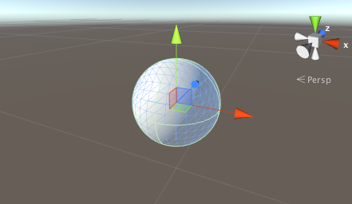
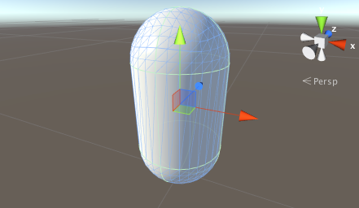
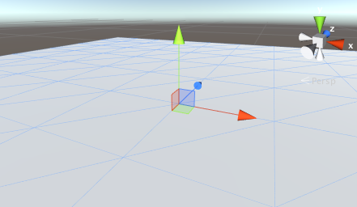

Primitive and placeholder objects
Unity can work with 3D models of any shape that can be created with modeling software. However, there are also a number of primitive object types that can be created directly within Unity, namely the Cube, Sphere, Capsule, Cylinder, Plane and Quad. These objects are often useful in their own right (a plane is commonly used as a flat ground surface, for example) but they also offer a quick way to create placeholders and prototypes for testing purposes. Any of the primitives can be added to the scene using the appropriate item on the GameObject > 3D Object menu.
Cube

This is a simple cube with sides one unit long, textured so that the image is repeated on each of the six faces. As it stands, a cube isn't really a very common object in most games but when scaled, it is very useful for walls, posts, boxes, steps and other similar items. It is also a handy placeholder object for programmers to use during development when a finished model is not yet available. For example, a car body can be crudely modelled using an elongated box of roughly the right dimensions. Although this is not suitable for the finished game, it is fine as a simple representative object for testing the car's control code. Since a cube's edges are one unit in length, you can check the proportions of a mesh imported into the scene by adding a cube close by and comparing the sizes.
Sphere

This is a sphere of unit diameter (ie, 0.5 unit radius), textured so that the entire image wraps around once with the top and bottom "pinched" at the poles. Spheres are obviously useful for representing balls, planets and projectiles but a semi-transparent sphere can also make a nice GUI device for representing the radius of an effect.
Capsule

A capsule is a cylinder with hemispherical caps at the ends. The object is one unit in diameter and two units high (the body is one unit and the two caps are half a unit each). It is textured so that the image wraps around exactly once, pinched at each hemisphere's apex. While there aren't many real world objects with this shape, the capsule is a useful placeholder for prototyping. In particular, the physics of a rounded object are sometimes better than those of a box for certain tasks.
Cylinder

This is a simple cylinder which is two units high and one unit in diameter, textured so that the image wraps once around the tube shape of the body but also appears separately in the two flat, circular ends. Cylinders are very handy for creating posts, rods and wheels but you should note that the shape of the collider is actually a capsule (there is no primitive cylinder collider in Unity). You should create a mesh of the appropriate shape in a modeling program and attach a mesh collider if you need an accurate cylindrical collider for physics purposes.
Plane

This is a flat square with edges ten units long oriented in the XZ plane of the local coordinate space. It is textured so that the whole image appears exactly once within the square. A plane is useful for most kinds of flat surface, such as floors and walls. A surface is also needed sometimes for showing images or movies in GUI and special effects. Although a plane can be used for things like this, the simpler quad primitive is often a more natural fit to the task.
Quad

The quad primitive resembles the plane but its edges are only one unit long and the surface is oriented in the XY plane of the local coordinate space. Also, a quad is divided into just two triangles whereas the plane contains two hundred. A quad is useful in cases where a scene object must be used simply as a display screen for an image or movie. Simple GUI and information displays can be implemented with quads, as can particles, sprites and "impostor" images that substitute for solid objects viewed at a distance.